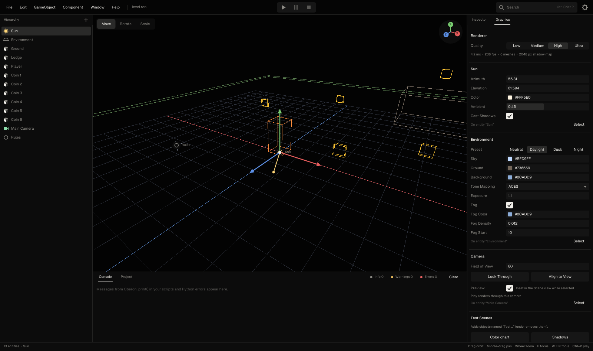
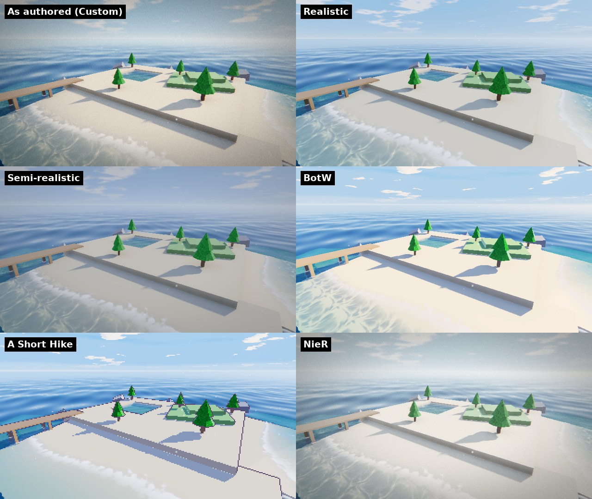

Graphics
The Graphics tab sits next to the Inspector in the right dock. It collects everything that decides how the frame looks, plus tools for testing it. Every edit is undoable and saved with the scene, except Quality and Preview, which are editor preferences.

The panel edits real scene entities. Each group shows which entity it
edits, for example On entity "Sun", with a Select button that jumps
to that entity in the Inspector. Nothing in the panel is hidden state: a
scene tuned here looks the same in Play and under at.run_scene.
Renderer#
- Quality: Low / Medium / High / Ultra / Beautiful. This sets the shadow map resolution, or turns shadows off on Low. Beautiful switches to contact-hardening cascaded shadows, ambient occlusion, physically based light, HDR bloom, FXAA and refractive water. It applies immediately.
- Stats update live: frame time in ms, fps, meshes drawn, and shadow map size. Use them with the 400 cubes test scene to see what your scene costs.
| Quality | Shadows | Shadow maps | Glow lights with shadows |
|---|---|---|---|
| Low | off | — | none |
| Medium | on | 1 × 1024 px | none |
| High (default) | crisp, 2 cascades | 2 × 2048 px | 2 nearest |
| Ultra | crisp, 3 cascades | 3 × 2048 px | 4 nearest |
| Beautiful | contact-hardening, 4 cascades, plus ambient occlusion | 4 × 2048 px | 4 nearest, soft |
Water is a component. Use Create → Water (it starts as a calm pond) or select an entity and use Add Component → Water in the Inspector. It has fields for size, colors, clarity, waves and foam. Tick Endless on a sea to carry it, calm, past its edges to the horizon. Caustics sets how strongly light dances on what's under it. Wind blows spray off the crests from 0.5 up. In Play, a camera under the surface sees a blue-green world and hears it muffled. See Rendering & Lights.
Point and spot lights#
Use Create → Point Light for a lamp or torch, and Create → Spot Light for a flashlight, headlight or stage light. You can also add either to any entity with Add Component. A point light shines every way from the entity. A spot light shines along the entity's forward axis (its blue Z handle points backward), so aim it with the Rotate tool. New spot lights start tipped down, lighting the ground in front of them.
| Field | What it does |
|---|---|
| Color | The light's colour |
| Intensity | Brightness. 1 lights a surface 1 m away like a white sun overhead. Torches and lamps 2–6, headlights 10–30 |
| Range | Where the light ends (m). 0 works it out from the brightness |
| Cone Angle | (Spot) the cone's edge, in degrees from its axis (up to 80) |
| Inner Angle | (Spot) full strength inside this angle. Closer to the cone angle gives a harder edge |
| Radius | The size of the glowing source. Bigger looks softer up close |
| Cast Shadows | Whether objects block it (High and up; see the shadow table) |
Placed lights share the shadowed-light budget in the table above with glowing meshes. A spot light costs a sixth of a point light, so a pair of headlights is cheap. A small mesh around a light (a bulb, a flame, a lens) never blocks it. See Rendering & Lights.
Sun#
This group edits the scene's first Directional Light. If there isn't one, Add Directional Light creates it.
| Field | Meaning |
|---|---|
| Time of Day | Moves the sun along a simple day arc in one drag: 6 = sunrise, 12 = highest (65°), 18 = sunset. Sets Azimuth and Elevation together |
| Azimuth | Compass direction the light comes from, in degrees. 0 = from +Z (behind the default view), 90 = from +X |
| Elevation | Height of the sun above the horizon. 90 = straight down (noon), 5–15 = long sunset shadows |
| Color | Sunlight tint |
| Ambient | How bright the shadowed sides are (0 = black shadows, 1 = no shading) |
| Cast Shadows | Shadow mapping for this light |
| Shadow Distance | How far from the camera shadows reach, in metres (default 120). They fade out beyond it. Shorter is sharper |
| Shadow Softness | How soft shadow edges are: 0 sharpest, 1 default, up to 8. Shows most on Beautiful, where shadows start sharp at the object and widen with distance by the Sun Size times this |
Azimuth and elevation are a friendlier way to set the light's direction vector. The Inspector's Directional Light section shows the same two fields.
Environment#
The Environment component sets the look of the whole scene: the sky and sun, ambient colour, exposure, tone mapping, and fog. The first entity that has one wins. A scene without one uses the neutral default look: white ambient, a near-black background, no fog, and no tone mapping. Click Customize Environment to create an Environment entity and start tuning.
Presets give you a starting point:
| Preset | Look | Tone mapping |
|---|---|---|
| Neutral | Plain lighting, no fog: the default | None |
| Daylight | Blue sky with sun and clouds, warm ground bounce, light haze | ACES |
| Dusk | Violet sky with a big warm sun, dark red ground, dense warm fog | AgX |
| Night | Near-black sky with a small dim disk, cold ambient, black fog | ACES |
| Field | Meaning |
|---|---|
| Sky / Ground | Ambient light from above and from below. Surfaces facing up take the sky colour; surfaces facing down take the ground colour; the rest blend between them. This hemisphere ambient makes flat-coloured scenes look grounded |
| Sky & Sun | Draw a sky dome instead of a flat colour: a gradient from Horizon to Zenith, the sun disk where the Directional Light shines from, a halo around it, and drifting clouds. Water and fog pick up the same sky |
| Background / Horizon | With the sky off, the flat colour behind everything. With it on, the sky colour at the horizon (also the far fog's colour) |
| Zenith | Sky colour straight up |
| Sun Size | Diameter of the sun disk in degrees (the real sun is about 0.5; 2 reads well in games) |
| Sun Glow | Brightness of the halo around the sun. Low suns glow warmer on their own |
| Clouds | Cloud cover, 0 = clear, 1 = overcast |
| Lens Flare | Strength of the glare, starburst and ghosts when you look toward the sun. Beautiful quality only; scenery and clouds in front of the sun hide it |
| Tone Mapping | How bright values are squeezed into the screen's range. None: values above 1 clip. Reinhard: soft and flat. ACES: filmic contrast and saturation. AgX: filmic, keeps bright colours from turning neon |
| Exposure | Brightness multiplier applied before tone mapping. Raise it with ACES or AgX, which darken mid-tones |
| Occlusion | Ambient occlusion strength: how much creases, corners and the ground around objects darken. 0 off, 1 default, up to 2. Beautiful quality only; it dims ambient light, so it shows most in shade |
| Fog | Exponential distance fog |
| Fog Color | Usually the same as Background, so distant objects melt into the sky |
| Fog Density | How quickly fog thickens per metre. 0.01 is light haze, 0.05 is thick |
| Fog Start | Distance from the camera with no fog at all |
| Fog Height | Height fog: the fog has full density below this height (m) |
| Fog Falloff | How fast it thins above Fog Height: e times thinner every 1/falloff metres. 0 keeps the fog even at every height |
| Fog Sun Glow | How much fog toward the sun glows in the sun's colour |
| God Rays | Sun shafts streaming past trees and walls toward the camera, 0 off to 2. Beautiful quality, with Sky & Sun on |
| Depth of Field | Blur on what's nearer or farther than the focus, 0 off to 4. Beautiful quality only |
| Focus Distance | Metres from the camera kept sharp. 0 follows the camera's Look At point (shown once Depth of Field is above 0) |
| Focus Range | Metres either side of the focus that stay sharp too |
| Wind / Wind Direction | The scene's wind, 0 still to 1 a gale, and which way it blows (degrees around Y). Grass sways, spring bones stream out, water sprays. See Grass & foliage |
Picking an Environment preset keeps your post effects.
Style#
The Style group picks a whole look for the scene: Realistic, Semi-realistic, BotW, A Short Hike or NieR. A style sets tone mapping, exposure, the lens, the shape of the height fog, shading, outlines, pixels and the Post group's values. It keeps your colours, the fog's colour and density, the sky and the clouds. Change any setting afterwards and the dropdown shows Custom. Pick the style again to reset it. The same dropdown sits in the Inspector's Environment section.

| Setting | What it does |
|---|---|
| Toon Bands | Toon shading: sunlight in this many flat steps, 1 to 4. 0 is smooth shading |
| Band Softness | How soft the steps' edges are (shown with Toon Bands above 0) |
| Shade Tint | The colour of shade. White leaves it alone; a light blue gives an illustrated look |
| Rim Light | Light along objects' edges from the sky, and from the sun when it's behind them, 0 to 2 |
| Painted Sky | With Sky & Sun on: a banded, brushed gradient, flat clouds and a flat sun |
| Outline | Dark lines on silhouettes and creases, in pixels on a 720 px screen. 0 is off |
| Outline Color | The lines' colour (shown with Outline above 0) |
| Pixelate | Pixel art: pixel size on a 720 px screen, scaled to the window. 0 is off |
| Palette | Levels per colour channel with a dither, for a retro palette. 0 is full colour |
Outline, Pixelate and Palette need Medium quality or higher. The rest work everywhere.
Post#
The Post group grades the finished frame: colour, bloom, vignette, grain and colour fringes. The values live on the Environment, so click Customize Environment first. They also show in the Inspector's Environment section. Grading runs on Medium quality and up, and bloom on High and up.
The row of looks at the top sets every field at once, and the current look is highlighted. Pick one, then fine-tune:
| Look | Feel |
|---|---|
| Neutral | No grade: the default |
| Bleached | Overexposed, washed out and pale, with strong bloom |
| Vivid | Warm, saturated sunshine |
| Film | Gentle contrast and warmth, grain, vignette |
| Noir | Black and white, hard contrast |
| Field | Meaning |
|---|---|
| Bloom | Glow around bright things, 0 off to 4. High and up |
| Contrast | Spread around mid grey. 1 is unchanged |
| Saturation | 0 is black and white, 1 is unchanged, up to 3 |
| Temperature | White balance: negative is cooler (blue), positive is warmer (orange) |
| Tint | White balance: negative is greener, positive is more magenta |
| Lift | Added to the shadows, per channel (R, G, B). Raises the blacks |
| Gamma | Midtone power per channel. Above 1 brightens the midtones |
| Gain | Highlight multiplier per channel. Above 1 overexposes |
| Vignette | Darkens the corners |
| Grain | Animated film grain |
| Aberration | Red and blue colour fringes toward the frame's edges |
For a bleached, overexposed look, start from Bleached or raise Gain to about 1.2 and drop Saturation to 0.5. For a warm adventure look, start from Vivid or set Temperature to 0.15 and Saturation to 1.35. See Post effects and colour grading for the details.
Camera#
This group edits the scene's first camera, the one Play renders through. If there isn't one, Add Camera creates one framed on your current view.
- Field of View
- Look Through / Align to View
- Preview: show the live inset when a camera is selected
Full guide: Cameras.
Test Scenes#
These buttons drop known content into the scene so you can judge a look
or a setting fairly. Every object they add is named Test …, and each
button press is one undo step. Remove N test objects deletes them all
at once, also as one undo step.
| Scene | Use it to |
|---|---|
| Color chart | A sweep of hues and brightness. Switch tone mapping and watch how saturated colours and highlights behave |
| Shadows | A floor, pillars, and a floating slab. Check shadow shape, contact, and acne while you move the sun |
| Fog depth | Pillars marching out to 150 m. Tune fog density and start until the far ones fade the way you want |
| 400 cubes | A 20×20 field. Watch the frame time stat at each quality level |
| Lantern | A glowing lantern ringed by crates. Try it at night: on High and up the crates throw shadows outward from the lantern. Untick its Glow Shadows to compare |
Test objects are ordinary entities. Remember to remove them before you save, unless you want to keep them.
A tuning workflow#
- Add Shadows and Color chart.
- Pick the preset closest to your mood.
- Set Elevation: low for drama, high for clarity. Then rotate Azimuth until the shadows fall where they read best.
- Adjust Sky / Ground until the shadowed sides look right, then Ambient for overall contrast.
- Pick Tone Mapping, then fix overall brightness with Exposure.
- Turn on Fog. Match Fog Color to Background and set Fog Start just past the play area.
- Click Remove test objects and save.
The same look in plain Python is in Guide: Rendering & Lights. The Lighting & mood tutorial walks through three complete looks.